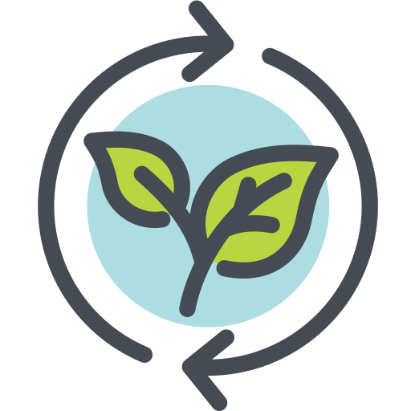

Sustentabilidade social

Sustentabilidade social
A sustentabilidade social está ligada a um conjunto de ações que visam melhorar a qualidade de vida das pessoas. Isso inclui a diminuição da desigualdade social e a garantia de acesso a serviços básicos como saúde e educação, por exemplo. Uma cidade ou país mais igualitário tende a apresentar uma redução da violência e crescimento econômico mais sólido.
Nessa questão, além de contribuirmos com quem precisa doando dinheiro ou mesmo nosso tempo, podemos também ser ativos politicamente cobrando quem nos representa de forma que os serviços públicos melhorem sua qualidade. Afinal, um lugar com oportunidades para todos faz bem para toda a sociedade.
Conheça os 4 tipos diferentes de sustentabilidade